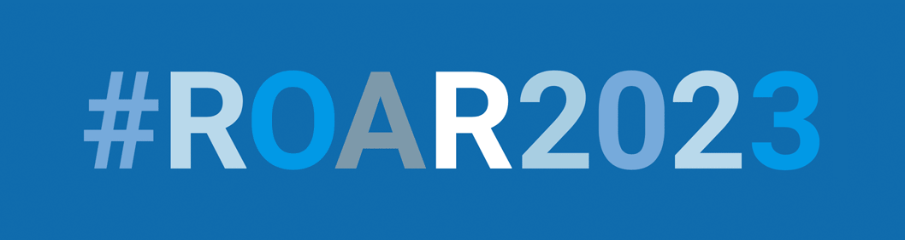

1006 Assignment Descriptions
HW 1: HW 1 taught us how to convert from and to binary numbers as well as how to write pseudocode and deal with Boolean operators. In the coding portion, we learned basic methods and list operations.
HW 2: HW 2 taught us the ideas behind loops and time complex for various sorting algorithms. With our knowledge of time complexities, we could compare the efficiencies of different algorithms. For coding, we wrote functions for and graphed a projectile simulation and began our machine learning project.
HW 3: HW 3 taught us how to deal with sets and dictionaries as well as how to implement recursive functions. We then continued on in machine learning and learned how to complete the vertical percolation problem using some numpy.
HW 4: HW 4 taught us the fundamentals of object-oriented programming in providing almost-complete skeleton code and having us go back and create classes or objects and implement functions to restore the missing parts.
HW 5: HW 5 taught us how to finally finish up our machine learning algorithm in not just separating the data out, but also provding more advanced stats on the existing data, providing a prediction of the classification of unknown data, and graphin data using seaborn and panda.
Midterm: On the midterm, we essentially acted as Photoshop to edit pictures by removing objects that should not be there, flipping the image, and turning it grey.
Final: We are now using Flask to make a webserver!
